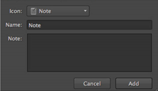

快速标记允许您根据上下文添加标记，方法是右击选区，然后选择要应用的标记类型。如果要标记大量媒体，您可能会发现使用后面描述的拖放方法更方便。
可以从垃圾箱、电子表格、查看器和时间线访问快速标签，以进行单个或多个选择。
| 1。 | 选择目标剪辑或序列。 |
| 2. | 右键单击突出显示的选择，转到 标签 ,并根据上下文选择所需的操作。 |
例如，bin 项目只允许您 标签选择 ,而剪辑实例允许您 标签快照选择 , 标签轨道 ,或 标记此序列
一旦你选择了标签类型, 添加标记 对话框显示。

| 3. | 选择的图标代表标签使用 图标 下拉列表。 |
| 4. | 输入一个 名称 和 注意 根据需要。 |
| 5. | 单击 添加 用所选标签标记您的选择。 |
|
|